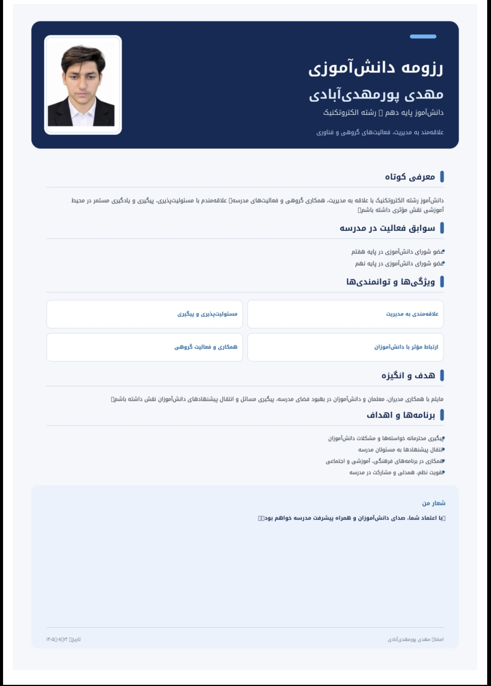

دانشآموز رشته الکتروتکنیک | علاقهمند به مدیریت، فناوری و کارآفرینی
من دانشآموز پایه دهم رشته الکتروتکنیک هستم. به فناوری، مهندسی برق، مدیریت، کارآفرینی، برنامهنویسی و طراحی وب علاقه دارم.
مهارتهای HTML و CSS را یاد گرفتهام و به ساخت وبسایتهای کاربردی و توسعه مهارتهای برنامهنویسی علاقهمندم.
برای مشاهده رزومه کامل من:
